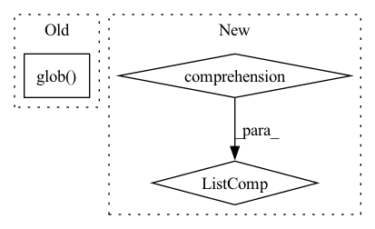

Pattern ID :16197
Before Change
folders = [os.path.join(folder, "tiles") for folder in folders]
for folder in folders:
vvs = sorted(glob.glob(os.path.join(folder, "vv", "*.png")))
vhs = sorted(glob.glob( os.path.join(folder, "vh", "*.png")) )
water_masks = sorted(
glob.glob(os.path.join(folder, "water_body_label", "*.png"))
)After Change
]
if split != "test":
flood_masks = [
vv.replace("_vv.png", ".png").replace("vv", "flood_label")
for vv in vvs
]
for vv, vh, flood_mask, water_mask in zip(
vvs, vhs, flood_masks, water_masks
):In pattern: SUPERPATTERN
Frequency: 6
Non-data size: 3
Instances Fragment ID: 54120665
Project Name: microsoft/torchgeo
Commit Name: 07a50692c659de8faa4897b424a7b6e973081f92
Time: 2022-10-20
Author: claiki.k@gmail.com
File Name: torchgeo/datasets/etci2021.py
M Class Name: ETCI2021
N Class Name: ETCI2021
M Method Name: _load_files(3)
N Method Name: _load_files(3)
M Parent Class: NonGeoDataset
N Parent Class: NonGeoDataset
M File Name: torchgeo/datasets/etci2021.py
N File Name: torchgeo/datasets/etci2021.py
M Start Line: 172
M End Line: 182
N Start Line: 173
N End Line: 184
Before Change
)
train_files = sorted(glob.glob(os.path.join(qa_dir, _TRAIN_FILE_FORMAT)))
valid_files = sorted(glob.glob(os.path.join(qa_dir, _VALIDATION_FILE_FORMAT)))
test_files = sorted(glob.glob( os.path.join(qa_dir, _TEST_FILE_FORMAT)) )
if cfg.exclude_context:
web_evidence_dir = NoneAfter Change
web_evidence_dir = os.path.join(file_paths["rc"], _WEB_EVIDENCE_DIR)
wiki_evidence_dir = os.path.join(file_paths["rc"], _WIKI_EVIDENCE_DIR)
return [
datasets.SplitGenerator(
name=name,
gen_kwargs={
"files": _qa_files(file_paths, cfg.sources, name, cfg.unfiltered),
"web_dir": web_evidence_dir,
"wiki_dir": wiki_evidence_dir,
},
)
for name in [datasets.Split.TRAIN, datasets.Split.VALIDATION, datasets.Split.TEST]
]
def _generate_examples(self, files, web_dir, wiki_dir):
This function returns the examples.
Fragment ID: 54120667
Project Name: huggingface/datasets
Commit Name: f9ee6d469581e0ea4dc5a1c56b7ccb46b6176ce6
Time: 2021-10-01
Author: 1706443+shirte@users.noreply.github.com
File Name: datasets/trivia_qa/trivia_qa.py
M Class Name: TriviaQa
N Class Name: TriviaQa
M Method Name: _split_generators(2)
N Method Name: _split_generators(2)
M Parent Class: datasets.GeneratorBasedBuilder
N Parent Class: datasets.GeneratorBasedBuilder
M File Name: datasets/trivia_qa/trivia_qa.py
N File Name: datasets/trivia_qa/trivia_qa.py
M Start Line: 166
M End Line: 203
N Start Line: 216
N End Line: 225
Before Change
self.img_paths = []
self.mask_paths = []
for img_path in data_dir.glob( "images/*.bmp") :
mask_path = data_dir / f"masks/{img_path.stem}.png"
self.img_paths.append(img_path)
self.mask_paths.append(mask_path)After Change
class SomicDataset(Dataset):
def __init__(self, base: Path, augs: albu.Compose) -> None:
self.img_paths = [str(p) for p in base.glob("images/*.bmp")]
self.augs = augs
def __getitem__(self, idx: int):
Fragment ID: 54120666
Project Name: taikiinoue/stad
Commit Name: 263b80dac382e9786dc7af6f29152ea79b2336cc
Time: 2020-08-01
Author: taikiinoue45@gmail.com
File Name: stad/datasets/somic.py
M Class Name: SomicDataset
N Class Name: SomicDataset
M Method Name: __init__(3)
N Method Name: __init__(3)
M Parent Class: Dataset
N Parent Class: Dataset
M File Name: stad/datasets/somic.py
N File Name: stad/datasets/somic.py
M Start Line: 15
M End Line: 23
N Start Line: 11
N End Line: 11
Before Change
if is_relative_path(pattern):
glob_iter = list(Path(base_path).rglob(pattern))
else:
glob_iter = [Path(filepath) for filepath in glob.glob( pattern) ]
matched_paths = [
filepath.resolve()After Change
pattern = os.path.join(base_path, pattern)
data_files_ignore = FILES_TO_IGNORE
fs = LocalFileSystem()
glob_iter = [PurePath(filepath) for filepath in fs.glob(pattern) if fs.isfile(filepath)]
matched_paths = [
Path(filepath).resolve()
for filepath in glob_iter
if filepath.name not in data_files_ignore and not filepath.name.startswith(".") Fragment ID: 54120669
Project Name: huggingface/datasets
Commit Name: 1406a04c3e911cec2680d8bc513653e0cafcaaa4
Time: 2021-11-23
Author: boris.dayma@gmail.com
File Name: src/datasets/data_files.py
M Class Name: AnonimousClass
N Class Name: AnonimousClass
M Method Name: _resolve_single_pattern_locally(3)
N Method Name: _resolve_single_pattern_locally(3)
M Parent Class:
N Parent Class:
M File Name: src/datasets/data_files.py
N File Name: src/datasets/data_files.py
M Start Line: 115
M End Line: 123
N Start Line: 120
N End Line: 126
Before Change
checkpoint path (str): last checkpoint path in `ckpt_save_dir`
ckpt_list = glob.glob( os.path.join(ckpt_save_dir, name_pattern))
ckpt_list.sort()
return ckpt_list[-1]
After Change
checkpoint path (str): last checkpoint path in `ckpt_save_dir`
ckpt_list = [f for f in os.listdir(ckpt_save_dir) if re.search(name_pattern, f) is not None]
ckpt_list.sort()
return os.path.join(ckpt_save_dir, ckpt_list[-1])
Fragment ID: 54120663
Project Name: cnstark/easytorch
Commit Name: b4791aa90870d5a76f77c7f03105d97e15a29450
Time: 2022-05-13
Author: 45590791+cnstark@users.noreply.github.com
File Name: easytorch/core/checkpoint.py
M Class Name: AnonimousClass
N Class Name: AnonimousClass
M Method Name: get_last_ckpt_path(2)
N Method Name: get_last_ckpt_path(2)
M Parent Class:
N Parent Class:
M File Name: easytorch/core/checkpoint.py
N File Name: easytorch/core/checkpoint.py
M Start Line: 57
M End Line: 59
N Start Line: 58
N End Line: 60
Before Change
self.img_paths = []
self.mask_paths = []
for img_path in data_dir.glob( "images/*.png") :
mask_path = data_dir / f"masks/{img_path.stem}_mask.png"
self.img_paths.append(img_path)
self.mask_paths.append(mask_path)After Change
class MVTecDataset(Dataset):
def __init__(self, base: Path, augs: albu.Compose) -> None:
self.img_paths = [str(p) for p in base.glob("images/*.png")]
self.augs = augs
def __getitem__(self, idx: int):
Fragment ID: 54120662
Project Name: taikiinoue/stad
Commit Name: 263b80dac382e9786dc7af6f29152ea79b2336cc
Time: 2020-08-01
Author: taikiinoue45@gmail.com
File Name: stad/datasets/mvtec.py
M Class Name: MVTecDataset
N Class Name: MVTecDataset
M Method Name: __init__(3)
N Method Name: __init__(3)
M Parent Class: Dataset
N Parent Class: Dataset
M File Name: stad/datasets/mvtec.py
N File Name: stad/datasets/mvtec.py
M Start Line: 16
M End Line: 24
N Start Line: 12
N End Line: 12